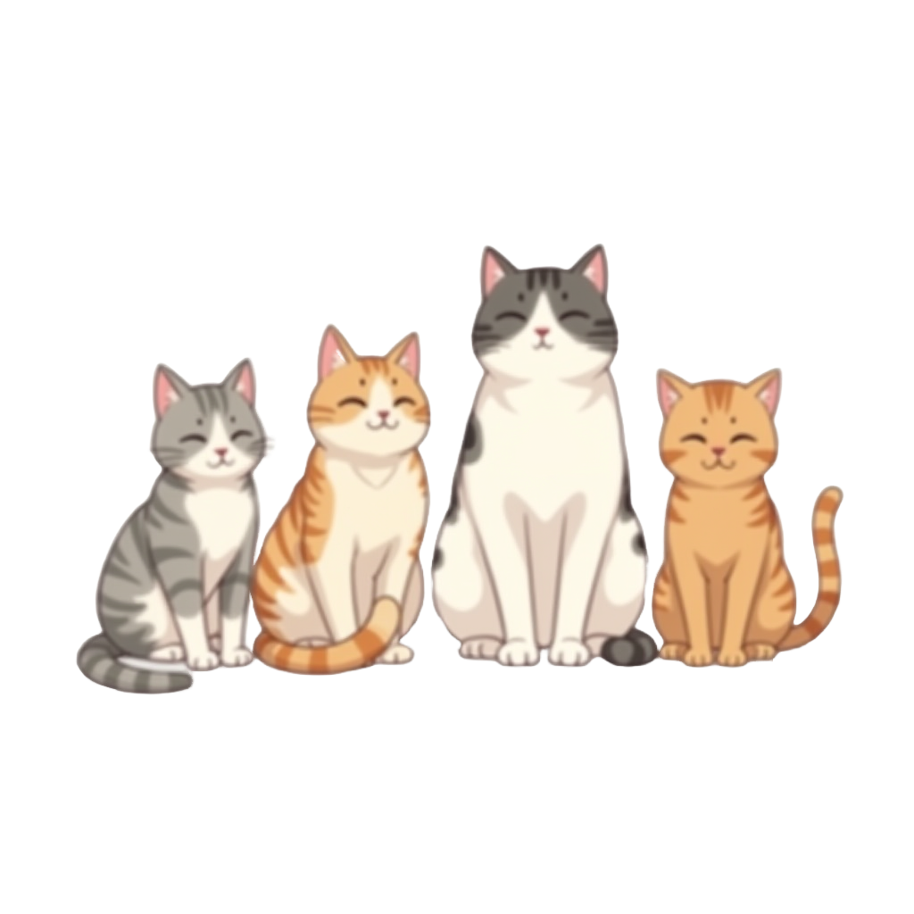

Paragraph about how awesome cats are. They are really awesome.

Some random cat information
Cats have 4 legs. Each leg has a foot. Each foot has four beans and a bigger-bean. Each front foot has an extra bean and a pointed bean. The usual number of beans on a cat are ten beans on the back feet and fourteen beans on the front feet. Total beans on a cat equals 24 beans. Some cats have extra beans on extra toes. Thats a story for another time.
- B. N. Khountear
Cats of action! Must act now!
Sign up for our newsletter. Don't count beans alone!